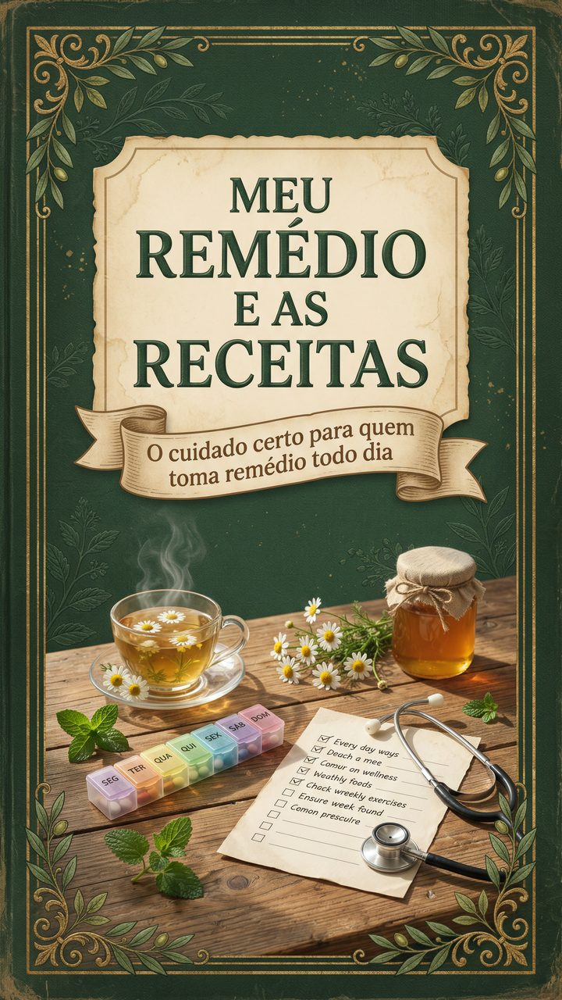
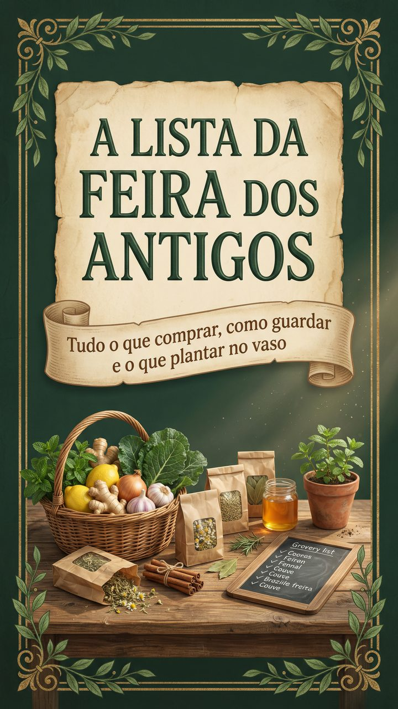
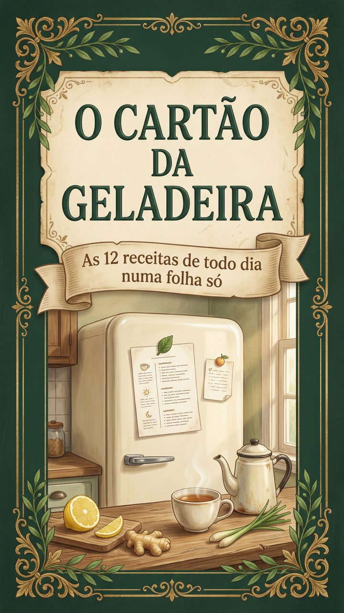

O resto da página aparece enquanto você assiste ao vídeo.
O que este manual tem de diferente
Sentiu alguma coisa? Toque nela e a receita certa aparece.
Não é livro para ler do começo ao fim. Você toca no que está sentindo e o manual mostra a receita, a medida, a hora de tomar e o cuidado para quem toma remédio.
Quando bate... olhe aqui
🦴Dor na junta, joelho ou coluna🌙Não consigo pegar no sono🍽️Comi demais, a barriga está pesada🔥Azia, queimação no estômago🤧Gripe, tosse, garganta arranhando🚽Intestino preso ou solto
+ 8 atalhos como estes, direto no seu celular
1Toque no que está sentindoO joelho, o sono, a barriga.
2Veja a receita prontaIngredientes, medida e passo a passo.
3Confira o aviso para vocêSe toma remédio, o manual avisa o que pede cuidado.
57receitas
14atalhos
3presentes
Você também lembra?
Quem cresceu perto dos mais velhos guarda pelo menos uma dessas cenas.
O chá de boldo que aparecia depois do almoço pesado de domingo
O xarope de mel com limão no primeiro sinal de tosse
O "vai lá no quintal pegar aquela folha" que resolvia tanta coisa
A compressa morna nas costas no fim de um dia de trabalho
A xícara de camomila antes de dormir, sem pressa
Esse saber está sumindo. Quem sabia de cor muitas vezes não anotou nada. E o que se acha na internet é receita solta: sem medida, sem o modo certo de preparar e sem dizer quem não deve tomar.
Foi para isso que nasceu O Manual dos Antigos: tudo num lugar só, com medida, passo a passo e os cuidados de cada receita, do jeito que a vó explicaria.
É para você que...
O manual foi escrito pensando em quem viveu essas receitas de perto.
Levanta da cadeira devagarinho porque o joelho já trava, e até evita escada.
Fica até de madrugada rolando na cama, o sono não vem… e acorda mais cansado no outro dia.
Come qualquer coisa e a barriga estufa: aquele peso que fica o dia inteiro.
Já gastou um dinheirão com remédio e consulta… e no fim a coisa sempre volta.
No celular ou no papel: você escolhe
O manual chega no seu e-mail e funciona como um aplicativo. Se preferir, imprime e ele vira um livro para deixar na cozinha.
Abre na hora, direto do e-mail, sem instalar nada
Busca: digite "tosse" ou "sono" e a receita aparece
Letra grande com um toque e modo noturno
Um botão gera o PDF pronto para imprimir
Imprima em casa ou na papelaria e encaderne como um livro
O manual abre no celular como um aplicativo, com letra grande e botões fáceis de tocar.
Busca na hora
Digite "tosse" ou "sono" e a receita aparece.
Letra que aumenta
Um toque e a letra fica do tamanho que você precisa.
Perfil de cuidado
Marque se usa remédio de pressão, diabetes ou anticoagulante.
Suas favoritas
Guarde as receitas que mais usa num cantinho só seu.
Modo noturno
Leitura confortável à noite, sem cansar a vista.
Imprime fácil
Gere o PDF e leve o manual para a cozinha.
E dentro do manual você ainda ganha 3 presentes
Não são livros soltos para baixar: estão dentro do próprio manual, no mesmo acesso, prontos para usar.

Presente 1
Meu remédio e as receitas
Toma remédio de pressão, de diabetes, para afinar o sangue ou para dormir? Veja quais receitas pedem conversa com o médico, o que fazer em cada caso, e imprima uma folha pronta para levar à consulta.
Incluído no seu pedido

Presente 2
A lista da feira dos antigos
Tudo o que as receitas pedem, separado entre feira, casa de ervas e despensa. Vá marcando no celular enquanto compra. E ainda: como guardar cada coisa e 5 ervas fáceis de plantar no vaso.
Incluído no seu pedido

Presente 3
O cartão da geladeira
As 12 receitas mais usadas resumidas numa folha só: quando tomar, como fazer, quanto e o cuidado principal. É só imprimir e prender na geladeira.
Incluído no seu pedido
Leve o manual completo
O manual e os 3 presentes, num pagamento só
O Manual dos Antigos, com as 57 receitas
Os 14 atalhos "Quando bate... olhe aqui"
Presente 1: Meu remédio e as receitas
Presente 2: A lista da feira dos antigos
Presente 3: O cartão da geladeira
Busca, letra grande e perfil de cuidado
Acesso para sempre e versão para imprimir
Tudo isso de R$ 97,00 por
R$29,90
pagamento único, sem mensalidade dá menos de R$ 0,53 por receita
Garantia de 7 dias. Se não gostar, devolvemos todo o valor.
Pagamento seguro pela PerfectPayAcesso na hora no seu e-mailCelular ou computador
O que estão dizendo
Como funciona depois que você toca no botão
1Você vai para a página de pagamento. Preenche nome e e-mail e escolhe como quer pagar.
2O acesso chega no seu e-mail logo após a confirmação do pagamento. Confira também a caixa de spam.
3Você abre no celular e já pode usar. Se preferir, imprime e guarda na cozinha.
Experimente por 7 dias sem preocupação
Abra o manual e faça as suas primeiras receitas. Se em até 7 dias você achar que não é para você, por qualquer motivo, é só pedir o reembolso e devolvemos todo o seu dinheiro.
100% do valor de volta, sem descontar nada
Sem perguntas e sem burocracia
Direito garantido pelo Código de Defesa do Consumidor (art. 49)
O risco é todo nosso.
Perguntas frequentes
É seguro comprar? Como sei que não é golpe?
O pagamento é feito na PerfectPay, uma plataforma de pagamentos, numa página protegida. Você recebe a confirmação da compra e o acesso no seu e-mail. E se por qualquer motivo não gostar, tem 7 dias para pedir o dinheiro de volta.
Como eu recebo o manual?
Assim que o pagamento é confirmado, o acesso chega no seu e-mail. Se não aparecer na caixa de entrada, olhe também no spam ou em "Promoções". Você abre no celular, tablet ou computador e pode salvar em PDF para imprimir.
Como faço o pagamento?
Toque em "Quero receber meu manual". Você vai para a página de pagamento, preenche seu nome e e-mail e escolhe a forma de pagar que preferir. É um pagamento único de R$ 29,90, sem mensalidade.
Não sou bom com celular. Vou conseguir usar?
Vai sim. O manual foi feito pensando nisso: botões grandes, letra que aumenta com um toque e uma busca simples. Se preferir papel, é só imprimir.
Os ingredientes são difíceis de achar?
Não. São coisas de feira, quintal e despensa: mel, limão, gengibre, alho, canela, camomila, hortelã, boldo e outras ervas conhecidas.
Os 3 presentes vêm separados?
Não. Eles já estão dentro do próprio manual, no mesmo acesso que chega no seu e-mail. É só abrir e tocar em "Seus 3 presentes". O cartão da geladeira e a folha para o médico têm um botão para imprimir.
O acesso é para sempre?
Sim. Pagamento único e acesso para sempre, sem mensalidade.
E se eu não gostar? Como peço o dinheiro de volta?
Você tem 7 dias de garantia, contados da compra. Basta pedir o reembolso pelo e-mail da compra ou pela plataforma de pagamento, sem precisar explicar o motivo, e devolvemos o valor integral.
O caderno da vó não precisa ficar na gaveta
Tenha as 57 receitas organizadas na palma da mão, com os 3 presentes, por menos que um lanche.